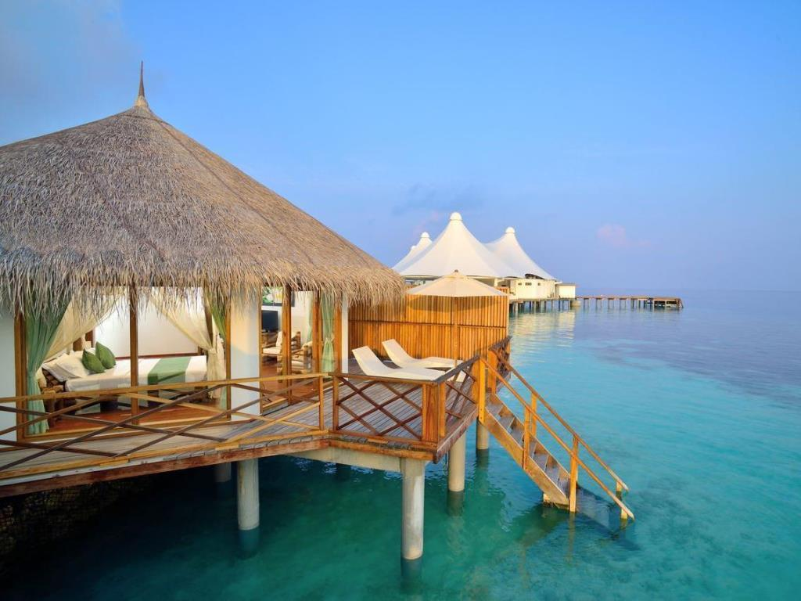
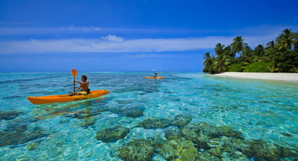

The paradise that God, Eric and Christina built wasn’t meant to be like this: gusting winds of up to 70 miles per hour that made our overwater dhoni shake and creak, torrential rain, and waves so strong they punched a hole in a neighbouring villa.
The resorts: All Maldivian resorts are on their own island. These range in size from 2.5km across to just 150m across. This means that the facilities on the resort you choose (restaurants, bars, sports facilities, entertainment etc) are the only ones you will have access to during your stay. Most resorts offer excursions by boat to local fishing village islands, or to the capital Male, but otherwise you will stay on the resort island for the duration of your stay. There are 106 resort islands to choose from, ranging from affordable to ultimate luxury. If you want to experience the 'real' Maldives then you might want to consider one of the Guesthouses that are now available on 5 inhabited islands, offering rooms at very reasonable rates.

The paradise that God, Eric and Christina built wasn’t meant to be like this: gusting winds of up to 70 miles per hour that made our overwater dhoni shake and creak, torrential rain, and waves so strong they punched a hole in a neighbouring villa.
The resorts: All Maldivian resorts are on their own island. These range in size from 2.5km across to just 150m across. This means that the facilities on the resort you choose (restaurants, bars, sports facilities, entertainment etc) are the only ones you will have access to during your stay. Most resorts offer excursions by boat to local fishing village islands, or to the capital Male, but otherwise you will stay on the resort island for the duration of your stay. There are 106 resort islands to choose from, ranging